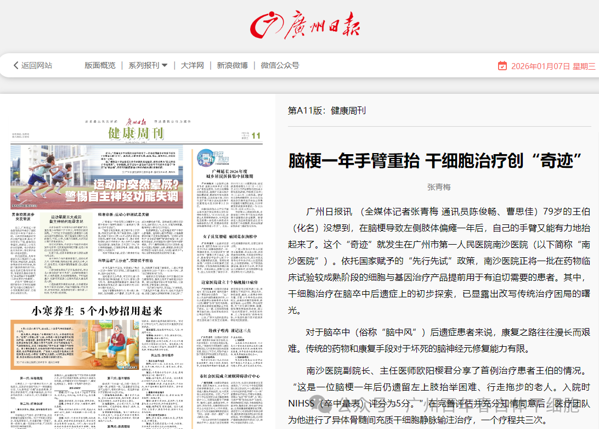
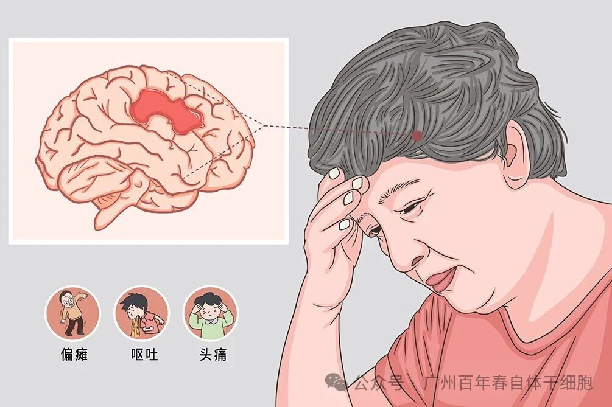
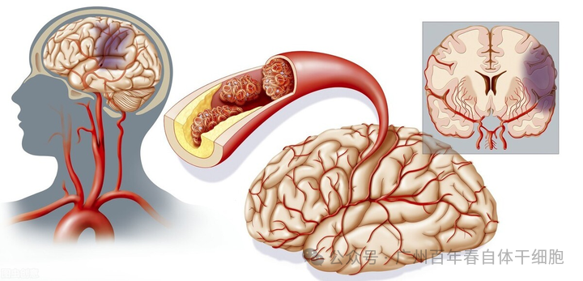
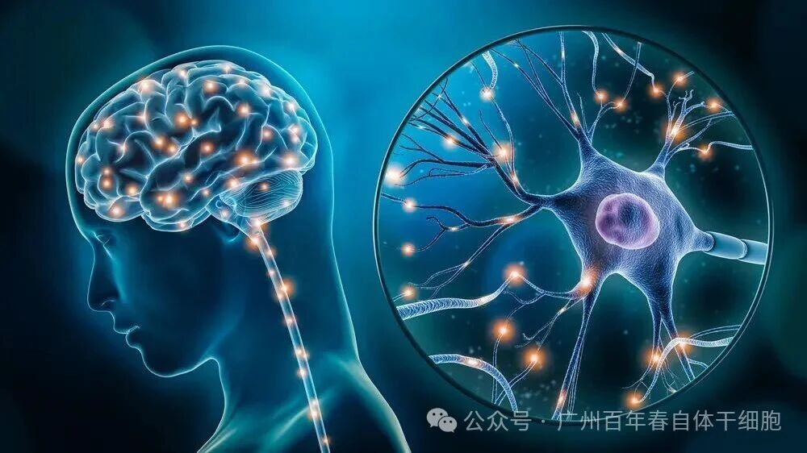

别等身体亮红灯！百年春自体干细胞，为您定制细胞级抗衰防线
2026-03-04

About Us
关于百年春

（广州日报截图）
据广州日报 1 月 7 日报道，原标题为《脑梗一年手臂重抬，干细胞治疗创 “奇迹”》的新闻，聚焦了脑卒中后遗症治疗领域的突破性进展。79 岁老人脑梗偏瘫一年后，通过干细胞治疗重抬手臂、改善多项症状的案例，不仅让医学探索再添新希望，更给无数受后遗症困扰的患者及家庭带来了慰藉。下文将为你详细呈现这一 “奇迹” 背后的治疗故事与医学突破。

对无数脑卒中（俗称 “脑中风”）后遗症患者和家庭来说，康复之路从来都是一场看不到头的煎熬，坏死的脑神经元难以修复，偏瘫的肢体、歪斜的口角，不仅让患者失去生活自理能力，更让整个家庭背负沉重的身心压力。但就在广州南沙，一位 79 岁老人的经历，让这场 “持久战” 迎来了突破性曙光！
79 岁的王伯（化名）怎么也没想到，自己脑梗偏瘫一年后，还能重新抬起左臂。一年前，突发的脑梗让他左侧肢体彻底 “失灵”，左上肢连抬举都异常困难，走路只能拖着腿缓慢挪动，生活起居全靠家人照料。“那段时间老人特别消沉，总说自己是累赘，我们带着他跑遍了医院做康复，效果一直不明显。” 回忆起过往，王伯的家人满是心酸。
转机出现在广州市第一人民医院南沙医院。依托国家赋予的 “先行先试” 政策，这家医院正将一批药物临床试验已达成熟阶段的细胞与基因治疗产品，提前用于有迫切需求的患者。王伯成为了该院首例接受干细胞治疗脑卒中后遗症的患者。
入院时，王伯的 NIHSS（卒中量表）评分为 5 分，这是评估中风患者神经功能缺损程度的权威标准，5 分意味着存在明显的肢体功能障碍，属于中度神经损伤。在完善全面评估、王伯及家人充分知情同意后，医疗团队为他制定了间充质干细胞静脉输注治疗方案，一个疗程共三次输注。
谁也没料到，效果来得如此迅速！两次输注后，医疗团队为其复查时惊喜地发现，王伯的 NIHSS 评分直接降到了 3 分，这代表他的神经功能缺损症状显著改善。“最直观的变化就是手臂！之前连抬到胸前都费劲，现在能有力地举起来了，走路也比以前稳当，不再拖拖拉拉。” 南沙医院副院长、主任医师欧阳樱君的话语里满是欣慰。
更让人意外的是，王伯脚上多年疼痛难忍的鸡眼，竟然也在治疗期间快速愈合了。“这完全是意料之外的收获！” 欧阳樱君解释道，这一现象提示干细胞可能通过全身性的免疫调节和修复机制发挥作用，不仅针对受损的脑组织，还能对全身其他部位的损伤进行修复，其作用机制比想象中更广泛。
除了肢体功能和皮肤问题的改善，王伯的口角歪斜症状也有了明显好转。南沙医院神经内科主任医师叶海霞补充道：“我们目前选择的治疗窗口是卒中后一个月至三年内、症状相对较轻的患者，就是希望能帮助他们实现更好的功能恢复，让他们重新回归正常生活。” 目前，该院已启动对第二例脑卒中患者的干细胞治疗，后续疗效值得期待。

提到脑卒中后遗症，很多人都知道传统治疗的局限。据统计，我国每年新增脑卒中患者超 200 万，其中约 70%-80% 的患者会遗留不同程度的后遗症，包括肢体偏瘫、言语不清、口角歪斜等。传统的药物治疗和康复训练，对已经坏死的脑神经元修复能力有限，大多数患者只能在漫长的康复中艰难维持，难以实现实质性改善。
而干细胞治疗的出现，恰恰打破了这一困局。作为一种具有多向分化潜能的细胞，干细胞能够通过修复受损组织、调节免疫系统等机制，为脑卒中后遗症治疗提供全新的思路。不过欧阳樱君也特别提醒：“干细胞并非‘神药’，其疗效存在个体差异，我们目前仍处于初步探索阶段，但这无疑为卒中后遗症的治疗增添了新的希望，也为无数患者家庭带来了慰藉。”

值得一提的是，南沙医院之所以能开展这项突破性治疗，离不开国家 “先行先试” 政策的支持。作为享有政策红利的医疗机构，该院正积极推动细胞与基因治疗领域的临床转化，让那些在临床试验中已展现出潜力的治疗技术，提前惠及有迫切需求的患者，为医学创新探索出一条 “从实验室到病床” 的快速通道。
王伯的案例，不仅是一个家庭的 “重生”，更标志着我国在脑卒中后遗症治疗领域迈出了重要一步。随着细胞与基因治疗技术的不断发展，未来或许会有更多像王伯一样的患者，摆脱后遗症的困扰，重新找回生活的尊严。
如果你身边也有脑卒中后遗症患者，不妨关注这项突破性治疗；也让我们为南沙医院的医学探索点赞，为每一位与病魔抗争的患者加油，医学的进步，正是为了让更多人重获新生！
免责声明：本文信息来源于网络，本文仅作知识交流与分享及科普目的，不涉及商业宣传，不作为相关医疗指导或用药建议。文章源自网络如有侵权请联系删除。文章来源：干细胞与外泌体